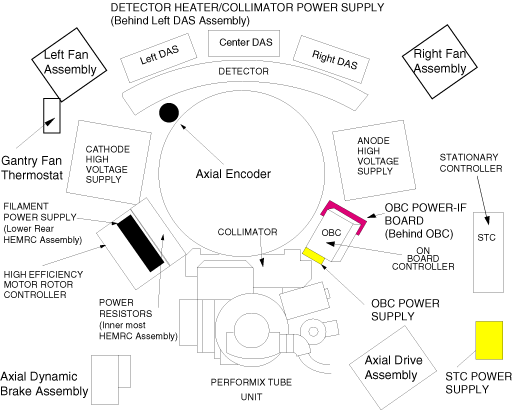

Operating Documentation
Direction 5114045-800, Rev# 10
LightSpeed 4.X Service Information (Advanced)
Operating Documentation |
Illustration 1: OBC Power Interface Board Location

Turn OFF the axial drive enable and HVDC enable switches on the STC chassis.
The primary function of the OBC PWR I/F is to provide a single, 120 VAC power distribution point on the rotating gantry for the X-Ray Generation Subsystem.
The second function of the board is to provide a convenient location for fusing the various subsystem circuits. In this way the major pieces of the XRGEN subsystem have been grouped logically, while adequately protecting the harnessing from faults.
The third function is to provide “Open Fuse Detection” for the Tube fan & pump circuit. A small voltage sensing circuit monitors the level at the load end of F3. If fuse F3 should open, the optically coupled solid state relay, U1, will interrupt the XRT pressure switch signal to the Gentry I/O board. This will cause an immediate scan abort and prevent additional energy from being dumped into the XRT.
For personnel protection, adhesive insulating pads are applied to the back of the OBC PWR I/F board to protect service personnel from accidentally contacting live component leads.
The OBC PWR I/F contains devices that can be damaged by ESD. This damage may not be immediately apparent, but may show up in the future as degraded operational performance. Therefore, these components should never be handled by anyone who is not wearing a properly grounded ESD prevention wrist strap. Careful attention to ESD packaging and handling procedures are required, to insure long term reliability of this assembly.
There are no Switches or Test Points on this board.
Table 1: OBC Power Interface Board Fuses
| FUSE # | RATING | DESCRIPTION | ||
|---|---|---|---|---|
| F1 | 8A, MDA | Protects 120 VAC to the OBC and Inverters. | ||
| F2 | 15A, MDA | Protects 120 VAC to the HEMRC Assembly. | ||
| F3 | 12A, FNM | Protects 120 VAC to the X-Ray Tube Assembly. | ||
| ||||
Table 2: OBC Power Interface Board LEDS
| LED # | COLOR | LABEL | DESCRIPTION |
|---|---|---|---|
| DS1 | Green | DS1 | Indicates 120 VAC is present on the board. |
Table 3: OBC Power Interface 120 VAC Distribution
| CONNECTOR | VALUE | COMMENTS |
|---|---|---|
| J8-1 & 2 | 120 VAC (Line) | Input externally protected to 30A maximum. |
| J8-3 & 4 | 0 VAC (Grounded Neutral) |